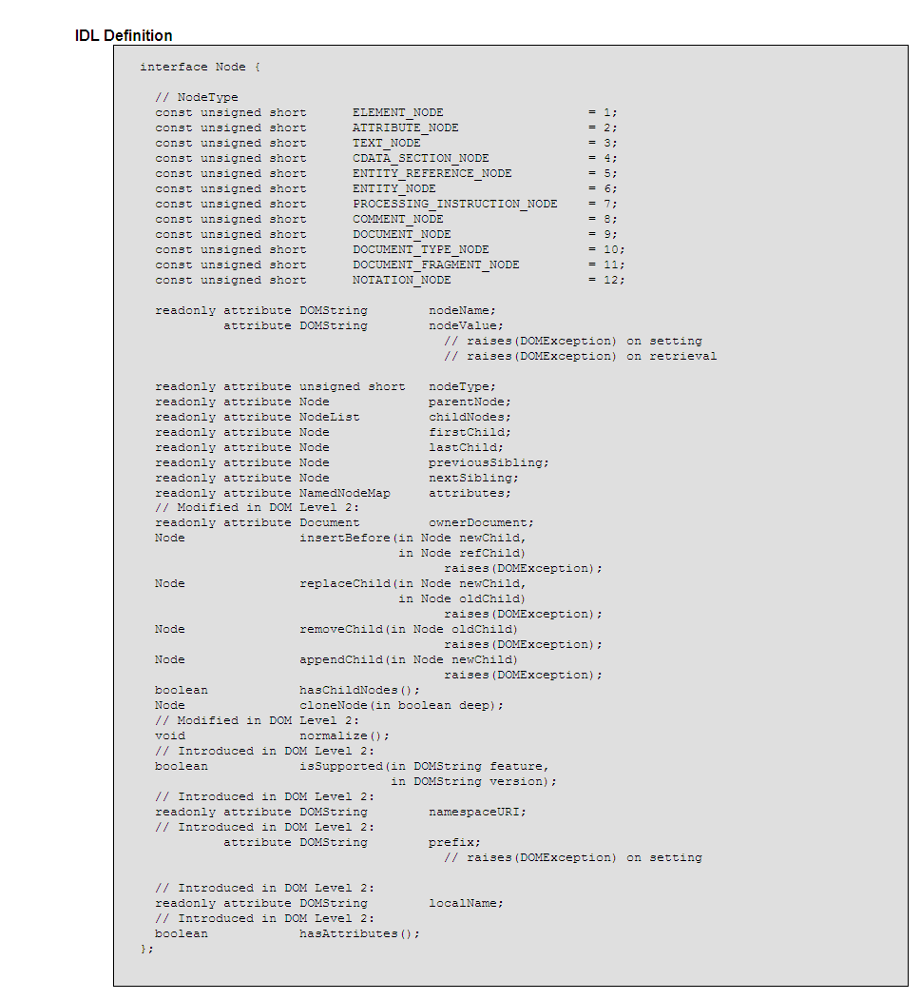
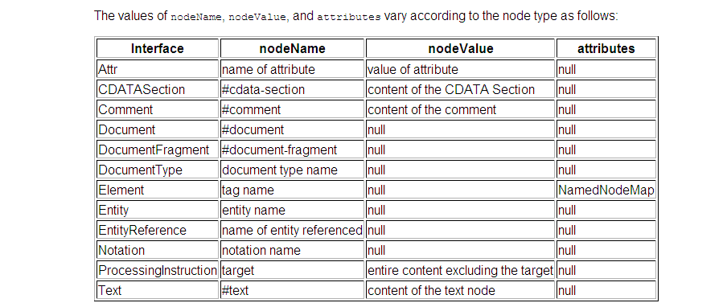

JavaScript Temelleri
Bölüm 19
W3C Belge Nesne Modeli (W3C Document Object Model) (W3C-DOM)
Bölüm 19.6.2 Sayfa 1
19.6.2 - Node (Düğüm) Arabirimi
Node (Düğüm) arabirimi, W3C-DOM'un temel düğüm veri tipidir. Bu düğüm tipi tüm tüm düğüm tiplerinin atasıdır. Yani Node (Düğüm) tipi tüm düğüm tipleri için generil düğüm tipini oluşturur. Aynı Object() tipinin diğer nesne tiplerinin generik tipi olması gibi. Tek başına bir Node düğümü yoktur. Düğümler bu tanımda olduğu gibi, 12 ayrı tipte düğüm olabilirler. Her bir düğüm tyipi kendisi için tanımlanan özellikler yanında generik Node (Düğüm) tipinin de özellilerini kalıtımla elde eder. Özellikler arasında metotların da bulunduğu her zaman hatırlanmalıdır.
Node arabirimin OMG-IDL yazılımı aşağıda görülmektedir:

Şekil 19.6.2-1 - DOM Düzey 2 de Node Arabiriminin IDL Yazılımı
IDL tanımları, nesne özelliklerine attributes adını vermektedir. Arabirim özellik ve metotlarına, JavaScript nesne özelliklerine erişildiği gibi erişilebilmektedir.
Node arabiriminde bir Node nesnesinin nodeType özelliğininin değeri olarak, salt okunur ve unsigned short tipinde 12 tamsayı sabit tanımlanmıştır. Bu öntanımlı sabitler, düğümü oluşuran nesne tipine göre nodeType özelliğininin öntanımlı değeri olarak verilmektedir. W3C-DOM API'sinin unsigned short tipi, W3C-DOM API'sinin C++ ile yazılımını ilgilendirmektedir. Bu özellik değeri, W3C-DOM API'sinin JavaScript bağlantısı (binding) için, sayısal tipte değer olarak yansıyacaktır. Düğüm tipini belirten nodeType değerlerine, aşağıdaki yöntemle erişilebilir:
/* <![CDATA[ */ function düğümTipi() { var sözelVeri =document.createTextNode('xxxx '); bilgiYaz('Bir Sözel Veri Düğümünün Tipi : ' + sözelVeri.nodeType, 'sonuç'); } // Eğer Belge Çözümleyici FireFox ise (GECKO Motoru) if (window.addEventListener) { window.addEventListener('load', düğümTipi , false); } // Eğer Belge Çözümleyici Internet Explorer İse else if (window.attachEvent) { window.attachEvent('onload',düğümTipi); } /* ]]> */
Yukarıdaki program bağlantılı olduğu sayfada çalışmaktadır.
Bu programda, bir düğüm noktası yaratılmış fakat, belge ağacına eklenmemiştir. Buna rağmen, bir düğüm noktası yaratıldıktan sonra, tüm düğüm nesnesinin özelliklerini elde eder. Bu nedenle, oluşmuş fakat henüz havada olan yani belge ağacına eklenmemiş düğüm türlerinin de düğüm türleri sorgulanabilir.
Bir düğüm noktasını dolduran herhangibir düğüm türü, düğüm nesnesinin tüm özelliklerini (metotların da birer özellik oldukları hatırlanmalıdır) kalıtım yolu ile elde eder. Örnek olarak, Yukarıdaki programında görüldüğü gibi, yeni oluşturulan paragraf düğümü, bir düğüm olduğu için, genel Node arabiriminin tüm özelliklerini, bu arada nodeType özelliğini içermiş ve Text düğüm tipinin ileride görmüş olacağımız data özelliğini de içermektedir. Bir düğüm verisi belge kütüğüne katıldığında, spesifikasyonda tanımlı tüm özellikleri edinmiş olur ve bu özelliklere varsayılan değerler varsa atanmış olur.
Node arabirimi, değeri karakter dizigisi tipinde nodeName ve nodeValue adlı salt okunur iki nitelik tanımlamaktadır. Bu niteliklerin değerleri de düğüm noktasını oluşturan nesne tipine göre öntanımlı değerler almaktadırlar. Aşağıdaki tablo, bir düğümü oluşturan çeşitli arabirimlerin düğüm adlarını, düğüm değerlerini ve niteliklerinin olup olmadığını açıklamaktadır.
Tablo 19.6..2.2 -1 - DOM Düzey 2 de Node Arabirimini Oluşturan Düğüm Türlerinin İsim, Değer ve Nitelikeri

Bu tablodan en çok kullanılan düğüm türlerinin nodeName ve nodeValue özelliklerinin değerlerini saptamak için kullanabiliriz. Bir sayfada aşağıda görülen bir paragaf düğümü yerleştirilmiş olsun :
... <p class="cursive-red" id="hedef"></p> ...
Kodları aşağıda görülen bir programda, sayfada bulunan bu paragraf düğümünün class nitelik düğümünün (Attr) nodeType, nodeName ve nodeValue özelliklerinin değerleri saptanmaktadır. Bu program bağlantılı olduğu uygulama sayfasında, çalışmaktadır.
/* <![CDATA[ */ function düğümTipi() { var refDüğüm =document.getElementById('hedef'), nitelikler = refDüğüm.attributes; bilgiYaz('Bir Nitelik (Attrs) Düğümünün nodeType Özelliğinin Değeri' + nitelikler.getNamedItem('class').nodeType, 'sonuç1'); bilgiYaz('Bir Nitelik (Attrs) Düğümünün nodeName Özelliğinin Değeri' + nitelikler.getNamedItem('class').nodeName, 'sonuç2'); bilgiYaz('Bir Nitelik (Attrs) Düğümünün nodeValue Özelliğinin Değeri' + nitelikler.getNamedItem('class').nodeValue, 'sonuç3'); } sayfaYüklenmesiTamamlandıktanSonraÇalıştır(düğümTipi); /* ]]> */
Yukarıdaki programda, dikkat edilecek bir nokta, nitelik (Attrs) düğüm tipinin düğüm nesnesinin değil, sayfaya yerlerşik olan elementin spesifikasyonlarda belirtilen nitelikleri olduğudur. Düğüm nesnesinin nitelikleri, düğüm nesnesinin özellikleridir ve düğümNesnesininBellekReferansı.nodeName veya düğümNesnesinin BellekReferansı['nodeName'] şeklinde erişilirler. Nitelik düğümleri ise sadece sayfada yerleşik bir elementin nitelikleri olarak tanımlıdırlar. Sayfada yerleşik bir elementin niteliklerine elementinBellekReferansı.attributes olarak ulaşılabilir. Bu ifade geriye bir tür ilişkisel dizi benzeri nesne türü olan, namedNodeMap tipi bir topluluk döndürür. Elementin nitelikleri bu namedNodeMap topluluğunun elemanlarıdır ve her elemana ilişkisel diziler gibi attributes.item('nitelikİsmi') şeklinde erişilir. Nitelik (Attrs) düğümleri, sayfada yerleşik değillerdir. Bunlar bir tür elektron bulutu gibi, sayfada yerleşik bir elemente göre tanımlı, bu elementin etrafını saran ve sadece bağlı oldukları element sayfada yerleşik olduğu sürece tanımlı olan değerlerdir. Nitelik düğümleri ve namedNodeMap toplulukları kısa süre sonra detaylı olarak incelenecektir.
Bir element düğümünün nodeName özelliğinin değeri, element ismidir. Bir element düğümünün nodeName özelliğinin değeri sorgulandığında, geri döndürülen değer, büyük harfle yazılmış olan, örnek olarak 'P' gibi bir element ismi olacaktır. Bu özellikten, bir element düğümü koleksiyonundan, id değeri belli olan bir element türüne erişim için yararlanabiliriz. Aşağıda kodları görülen programı, hem document.getElementById() metodunun nasıl çalıştığının anlaşılmasına yardım edecek, bir yandan, kendi özel idNiteliğiİleElementeErişim() fonksiyonumuzun yazılmasına olanak sağlayacaktır. Bu program, bağlantılı olduğu, web sayfasında çalışmaktadır.
/* <![CDATA[ */ function idNiteliğiİleElementeErişim(id) { var bodyDüğümü = document.getElementsByTagName('BODY'), düğümler = bodyDüğümü.item(0).childNodes; for(var i = 0; i <düğümler.length ; i ++) { if(düğümler.item(i).nodeName === 'P') { if(düğümler.item(i).attributes.getNamedItem('id').nodeValue === id) { break; } } } return düğümler.item(i); } function başlat() { var bilgiNotuYeri = idNiteliğiİleElementeErişim('bilginotu'); bilgiNotuYeri.appendChild(document.createTextNode('Aranan Element Düğümü Bulundu ve Bu Mesaj Yazıldı !')); } sayfaYüklenmesiTamamlandıktanSonraÇalıştır(başlati); /* ]]> */
Yukarıdaki program, argümanı sözel tip olan id değişkeni olan bir idNiteliğiİleElementeErişim() fonksiyonun içermektedir. Bu fonksiyon ilk olarak,
... var bodyDüğümü = document.getElementsByTagName('BODY'), ...
program adımı ile, tipi 'BODY' sayfadaki tüm element düğümlerinin bellek referansları bir nodeList arabirimine uyan bir nesne ailesi örneğinin bellek referansı olan değeri, bodyDüğümü değişkenine atamaktadır. Belgede sadeece bir tane <body> elementi olduğundan, döndürülen bodyDüğümü değişkeninin değeri, sadece bir tek elemanlı bir nodeList nesne örneğinin bellek referansıdır. Biraz ileride göreceğimiz gibi, dizi benzeri nodeList arabirimine uygun yapıda bir nesne örneğinin elemanlarına, aynı diziler gibi tamsayı sıralı indisleri yardımı ile erişilebilir. Dizilerin indis sıraları 0 dan başladığı için, burada geri döndürülen nodeList arabirimi yapısındaki nesne örneği, sadece indisi 0 olan bir tane eleman içermektedir. Bu eleman da, sayfada yerleşik olan tek <body> elementinin bellekteki erişim referansıdır.
İkinci adım olarak, sayfadaki tek <body> elementinin alt düğümlerinin bellek referanslarını içeren bir nodeList
... düğümler = bodyDüğümü.item(0).childNodes; ...
program adımı ile düğümler değişenine atanmaktadır. W3C-DOM belge nesne yapılanmasına göre sayfadaki tek <body> elementi, alt nesneler olarak tüm sayfa elementlerini içerdiğinden, düğümler değişkeninin de elemanları tüm sayfa elementleri olan bir nodeList olacaktır. Yani daha doğru bir tanımla, düğümler değişkenin değeri, elemanları, tüm sayfa elementleri olan, yapısı nodeList arabirimi tanımına uyan bir nesne sınıfı örneğinin bellek referansı olacaktır. Bu ifade kısa bir söylem türü olarak, düğümler değişkeni, tümsayfa elementlerini eleman olarak içeren bir düğüm listesidir şeklinde ifade edilmektedir. Bu düğüm listesi baştan sona doğru taranır ve türü paragraf türü olan ve id değişkeninin değeri, fonksiyona beslenen argüman ile tür ve değer olarak aynı olan eleman bulununca arama sona erdirilir ve uyuşma sağlanan eleman (bellek referansı) geri döndürülür. Burada, düğümler düğüm listesinin elemanları olan her element elemanın, namedNodeMap tipinde bir toplulukta toplanmış alt nesneleri olan nitelik (Attrs) düğümleri vardır. Bu nitelik düğümleri arasında id niteliğimin değerine,
... düğümler.item(i).attributes.getNamedItem('id').nodeValue...
şeklinde erişilebilmeltedir. Daha başka erişim yolları da bulunmaktadır. Bunlardan birisi de Element arabiriminin, document.getAttribute('id'), metodudur. Sonuçta, oluşturulan idNiteliğiİleElementeErişim() fonksiyonu, genel amaçlı olması için aşağıdaki gibi düzenlenmiştir :
/* <![CDATA[ */ function idNiteliğiİleElementeErişim(id) { var bodyDüğümü = document.getElementsByTagName('BODY'), düğümler = bodyDüğümü.item(0).childNodes; for(var i = 0; i <düğümler.length ; i ++) { if(düğümler.item(i).attributes.getNamedItem('id').nodeValue === id) { break; } } return düğümler.item(i); }
Yukarıda görüldüü gibi son hali verilmiş olan idNiteliğiİleElementeErişim() fonksiyonu, bdelib.js kitaplığına alınarak, bu kitaplığın kullanıldığı programlarda, document.getElementById() metodu ile eşdeğer olarak kullanılabilmesi sağlanmıştır.
Yine çok kullanılan bir düğüm tipi olan sözel tipte verilerin oluşturduğu, Text arabiriminde tanımlı nesne yapısındaki düğüm türlerinin nodeName ve nodeValue değerlerinin incelendiği bir program aşağıda görülmekte ve bağlantılı olduğu sayfada çalışmaktadır.
/* <![CDATA[ */ function başlat() { var bilgiNotuYeri = idNiteliğiİleElementeErişim('bilginotu'); bilgiNotuYeri.appendChild(document.createTextNode('Bu Bir Sözel Veridir !')); for(var i = 0; i < bilgiNotuYeri.childNodes.length; i ++) { if(bilgiNotuYeri.childNodes.item(i).nodeType === 3) { sonuçYaz('Bir Text tipi düğümün nodeName Değeri : ', bilgiNotuYeri.childNodes.item(i).nodeName, 'sonuç1'); sonuçYaz('Bir Text tipi düğümün nodeValue Değeri : ', bilgiNotuYeri.childNodes.item(i).nodeValue, 'sonuç1'); } } } sayfaYüklenmesiTamamlandıktanSonraÇalıştır(başlati); /* ]]> */
Yukarıdaki programda, dikkat edilecek bir nokta, bilgiNotu element düğümünün (unutmayalım bu söylem şekli sadece bir kısayol söylemidir !) alt düğümlerinin tiplerinin sınandığı döngüde, bir Text düğümü tipi bulunduğunda döngü çıkış bildirimi verilmemiştir çünkü bir element düğümü sadece bir tek Text tipi alt düğüm içerebilmektedir. Bu nedenle, bir döngüde bir element düğümünün Text tipi alt düğümü arandığnda, bir kez uyuşma sağlandığında, bir başka Text tipi alt düğüm olmadığından, bir kez daha uyuşma sağlanması olanaksızdır. Bu yüzden ilk uyuşma sağlanmasından sonra çıkış bildirimi yapılması gereksiz olmaktadır. Çünkü uyuşma sağlandıktan sonra döngü devam edebilir, fakat başka Text tipi düğüm olamayacağından, başka bir uyuşma gerçekleşmeyecektir ve döngüden otomatik olarak çıkılacaktır.
Yukarıdaki programda, alınan sonuç, Tablo 19.6.1 de belirtilmiş olan sonuçlarla aynıdır ve bir Text tipi düğümüm nodeName değerinin #text ve nodeValue değerinin, düğümüm içeriği olduğu görülmektedir. Bu sonuçlar, programlarda Text tipi düğümlerin ayırdedilmesi amacı ile kullanılabilecektir.
Bundan sonra inceleyeceğimiz özellik, düğüm nesnesi tipinde, salt okunur bir özellik olan parentNode yani düğümün bir üst düzey düğümü özelliği olacaktır. W3C-DOM belge ağacının karmaşık yapısı nedeni ile, bilinen bir düğümün üst düzey düğümünün öngörülmesi kolay değildir. Bu nedenle, bu saptamayı, program adımları ile yaptırmak tek çıkar yol sayılabilir. Bu işlemin yapıldığı bir programın kodları aşağıda görülmektedir. Bu program, bağlantılı olduğu sayfada çalışmaktadır.
/* <![CDATA[ */ function düğümTipiniBelirle(düğüm) { var düğümTipi = düğüm.nodeType, düğümTürü = ''; switch(düğümTipi) { case 1 : düğümTürü = ELEMENT_NODE; break ; case 2 : düğümTürü =ATTRIBUTE_NODE; break ; case 3 : düğümTürü = TEXT_NODE; break ; case 4 : düğümTürü = CDATA_SECTION_NODE; break ; case 5 : düğümTürü = ENTITY_REFERENCE_NODE; break ; case 6 : düğümTürü = ENTITY_NODE; break ; case 7 : düğümTürü = PROCESSING_INSTRUCTION_NODE; break ; case 8 : düğümTürü = COMMENT_NODE; break ; case 9 : düğümTürü = DOCUMENT_NODE; break ; case 10 : düğümTürü = DOCUMENT_TYPE_NODE; break ; case 11 : düğümTürü = DOCUMENT_FRAGMENT_NODE; break ; case 12 : düğümTürü = NOTATION_NODE; break ; return düğümTürü; } function birÜstDüzeyDüğüm(altDüğüm) { var üstDüzeyDüğüm = altDüğüm.parentNode, düğümTipi = düğümTipiniBelirle (üstDüzeyDüğüm); sonuçYaz('Bir Üst Düzey Düğümün Tipi : ' + düğümTipi, 'sonuç1'); sonuçYaz('Bir Üst Düzey Düğümün nodeName Değeri : ' + üstDüzeyDüğüm.nodeName, 'sonuç2'); sonuçYaz('Bir Üst Düzey Düğümün nodeValue Değerii : ' +üstDüzeyDüğüm.nodeValue, 'sonuç3'); } function başlat() { var düğüm = idNiteliğiİleElementeErişim('sonuç1'); birÜstDüzeyDüğüm(düğüm); } sayfaYüklenmesiTamamlandıktanSonraÇalıştır(başlat); /* ]]> */
Yukarıdaki programda, görülen düğümTipiniBelirle () alt programı, program kitaplığına alınmıştır.
Bir düğümün alt düğümlerine, düğümün childNodes özelliği ile erişilebilir. Bir düğümün alt düzey düğümleri birden çok olabilir. Bu nedenle, childNodes özelliği geriye NodeList tipinde bir nesne örneğine erişim sağlayan bir bellek referansı döndürür. Eğer düğüm hiç alt düzey düğüm içermiyorsa, döndürülen düğüm listesi boş bir düğüm listesi olacaktır.
Bu tip bir nodeList (düğüm listesi) tipinde koleksiyonlarla daha önceden karşılaşmış durumdayız. Bu konuda listeden belirli elemanlara erişim yöntemleri, Düğüm listeleri incelenirken ele alınacaktır. Buna rağmen burada gerekli olduğu için düğüm listeleri üzerine açıklayıcı bilgi verilmesi yararlı olacaktır. Düğüm listeleri nesne yapısı, dizi nesne yapısına çok benzer, dizilerde olduğu gibi length özelliği tanımlıdır ve bir düğüm listesi aynı dizi gibi çalışılabilir. Ne var ki bu şekilde çalışma artık desteklenmemektedir. Yeni yönteme göre, dizi listeleri item (birim) adı verilen elemanlardan oluşur ve her birime tamsayı dizi indisleri ile erişilmelidir. Programlarımızın bundan sonra desteklenmesini istersek, programlarımızda eski değil, aşağıdaki programda görüldüğü gibi yeni yöntemleri kullanmalıyız. Bu program, bağlantılı olduğu web sayfasında çalışmaktadır.
/* <![CDATA[ */ function altDüğümleriSapta() { var topnavlist = idNiteliğiİleElementeErişim('topnavlist1'), altDüğümler = topnavlist.childNodes , altDüğümlerUzunluğu = altDüğümler.length, i = 0; if (altDüğümlerUzunluğu > 0) { do { sonuçYaz ('Alt Düğüm(' + i + ') : ', altDüğümler.item(i).nodeName); i++; document. getElementById('sonuç').appendChild(document.createElement('BR')); } while(i > altDüğümlerUzunluğu); } sonuçYaz('Toplam', altDüğümlerUzunluğu + 'Alt Düğüm Saptanmıştır.', 'sonuç'); } sayfaYüklenmesiTamamlandıktanSonraÇalıştır(altDüğümleriSapta); /* ]]> */
Bir düğümün alt düğüm türleri ve sayısı belge çözümleyiciye özgü JavaScript Yorumlayıcısının yazılımına bağlıdır. Bu nedenle, yukarıdaki program, gibi programlarda elde edilecek sonuçlar, farklı belge çözümleyicilerinde farklı olabilir.
Bir düğüm ile aynı düzeyde olan diğer düğümlere bu düğümün kardeşleri (siblings) adı verilir. Kardeş düğümler, bağlantı düğümüne göre daha önce veya daha sonra konumlanmış olabilirler. Bağantı düğümünden daha önce konumlanmış olan düğüme, bağlantı düğümünün previousSibling niteliği yardımı ile ulaşılabilir. Bu özelliğin kullanıldığı bir program aşağıda görülmektedir. Bu program iliştirildiği, uygulama sayfasında çalışmaktadır.
/* <![CDATA[ */ function birÖncekiEşdüzeyDüzeyDüğüm() { var bağlantı = document.getElementById('hedef'); öncekDüğümTipi = düğümTipiniBelirle(bağlantı.previousSibling); sonuçYaz('Önceki Düğümün Tipi : ' + öncekiDüğümTipi, 'sonuç'); } sayfaYüklenmesiTamamlandıktanSonraÇalıştır(birÖncekiEşdüzeyDüzeyDüğüm); /* ]]> */
Bu program sonucunda, önceki düğümün bir element düğümü değil, bir metin düğümü olduğunun ortaya çıkması, çözümlenmiş belgelerin düğüm yapılanmasının önceden kestirilemeyecek kadar karışık olabileceği konusunda programcılar için bir uyarı sayılmalıdır.
Bir belgedeki bağlantı düğümünün nextSibling özelliği de benzer bir programla, bir sonraki eşdüzey düğümün tipini belirleyebilir. Bu özelliğin uygulandığı bir programın kodları aşağıda görülmekte ve bu program, bağlantılı olduğu uygulama sayfasında çalışmaktadır.
/* <![CDATA[ */ function birSonrakiEşdüzeyDüzeyDüğüm() { var bağlantı = document.getElementById('hedef'), sonraki = bağlantı(bağlantı.nextSibling), sonrakiDüğümTipi = düğümTipiniBelirle(sonraki); sonuçYaz('Sonraki Düğümün Tipi : ' +sonrakiDüğümTipi, 'sonuç'); } sayfaYüklenmesiTamamlandıktanSonraÇalıştır(birSonrakiEşdüzeyDüzeyDüğüm); /* ]]> */
Bu programın sonucunda, bir sonraki düğümün tipinin bir element düğümü olması şaşırtıcı değildir. Çünkü önce element düğümü, sonra da içeriği olan metin düğümü yerleşmektedir.
Düğüm arabirimi bir element düğümü ise, bu elementin niteliklerine, düğümün attributes özelliği ile erişilebilir. Örnek olarak,
altDüğümler = document.getElementById(bağlantı).attribues;
program adımı, id değeri 'bağlantı' olan bir sayfa elementinin nitelik değerlerini, altDüğümler adında bir NamedNodeMap koleksiyonuna atamaktadır.
Bu özellik geriye bir koleksiyon nesnesi olan namedNodeMap türünde bir nesne örneğine erişim sağlayabilen bir bellek referansı döndürür. Bu bellek referansından yararlanılarak düğümün niteliklerine nasıl ulaşılabileceği, namedNodeMap arabirimi incelenirken görülecektir. Buna rağmen, buradaki uygulamalar için, kısaca, namedNodeMap arabiriminin nesne yapısının, ilişkisel dizilere çok benzediğini söyleyebiliriz. Bu koleksiyonun, eleman sayısını veren length isimli bir özelliği, elemanlarına erişimi sağlayan item isimli bir başka özelliği bulunmaktadır. Koleksiyon içinde elemanların sıralanması belirli bir sıraya bağlı değildir. Elemanlara, item(tamsayı indis değeri) ile ulaşılabildiği gibi, koleksiyonun getNamedItem(DOM String tipinde item ismi), setNamedItem(DOM String tipinde item ismi), removeNamedItem(DOM String tipinde item ismi), metotları kullanılrak da erişilebilir.
Çözümlenmiş belgenin düğüm ağacında Element tipi düğümlerden başka hiçbir düğüm tipinin attributes özelliği yoktur. Bu nedenle, Element tipi düğümlerden başka tüm düğüm tiplerinde attributes niteliği geriye null değerini döndürür.
Bir element düğümünün attributes özelliğinin değeri, belge ağacına yerleşmiş olsun veya olmasın, elemanları bu elementin varsayılan veya kullanıcı eliyle değeri atanmış nitelikleri olan bir namedNodeMap koleksiyonudur.
namedNodeMap ve nodeList koleksiyonları statik değildir. Sayfa yapısında bir değişiklik olduğunda, bu koleksiyonların içerikleri güncellenir ve length özelliklerinin değeri yenilenir.
Bir düğümün ownerDocument özelliği, düğümün bağlı olduğu Document düğümünün bellek referansını döndürür. Eğer düğüm yaratılmış fakat henüz belge ağacına monte edilmemişse, geriye null döndürülür.
Oluşturulmuş bir düğümün belge ağacına eklenmesini sağlayan generik düğüm metotlarından bir diğeri, insertBefore() metodudur. Bu metot, oluşturulmuş yeni düğümü, bağlantı düğümünün ilk üst düzey atasının alt düğümleri arasında olan bağlantı düğümünün önüne ekler. Bu metodun uygulaması aşağıda görüldüğü şekildedir:
bağlantıDüğümününİlkAtasınınBellekReferansı.insertBefore(yeniDüğümBellekReferansı, bağlantıDüğümüBellekReferansı);
Metodun ilk parametresi yeni düğümün bellek referansını döndüren bağlantıDüğümüBellekReferansı.parentNode.nextSibling gibi bir ifade olabilir. Metot geriye eklenecek olan düğümün bellek referansını döndürür, buna gereksinme yoksa, bir değişkene atanmadan kullanılır. Eğer yeni düğüm bir documentFragment ise, tüm alt düğümleri aynı sıra ile yerleştirilir. Eğer yeni düğüm daha önceden yerleştirilmişse, önce kaldırılır, sonra yeniden belirtilen yere yerleştirilir.
Oluşturulmuş bir düğümü, belirtilen bir düğümden önce belge ağacına yerleştiren bir programın kodları aşağıda görülmektedir. Bu program, bağlantılı olduğu uygulama sayfasında çalışmaktadır.
/* <![CDATA[ */ function düğümünÖnüneEkle() { document.getElementById('hedef').parentNode.insertBefore(document.createElement'button'), document.getElementById('hedef')); } sayfaYüklenmesiTamamlandıktanSonraÇalıştır(önüneEkle); /* ]]> */
Bu program, hernekadar çalışıyor olsa da, okunurluğun sağlanması için, değişkenlerin kullanılması daha alışılmış olacaktır. Eklenmiş olan düğme elementinin hiçbir niteliği atanmamış olduğundan, sayfaya minimum boyutta eklenmektedir.
Bir düğümün bir başka düğümün önüne eklenmesi için, kolay kullanılan bir fonksiyon aşağıda görülmektedir.
function önüneEkle (yeniDüğümünBellekReferansı, bağlantıDüğümününBellekReferansı) { var ilkAta = bağlantıDüğümününBellekReferansı.parentNode; ilkAta.insertBefore(yeniDüğümünBellekReferansı, bağlantıDüğümününBellekReferansı); }
Bu fonksiyon, bdelib.js fonksiyon kitaplığına eklenmiştir. Bu fonksiyonun kullanıldığı, bir programın kodları aşağıda görülmektedir. Bu program, bağlantılı olduğu uygulama sayfasında çalışmaktadır.
/* <![CDATA[ */ function başlat() { var bağlantı = document.getElementById('hedef'), yeniDüğüm = document.createElement('p'), içerik = document.createTextNode('Bu İçerik Belgeye Yeni Eklenmiştir ! '); yeniElement.appendChild(içerik); önüneEkle(yeniDüğüm, bağlantı); } sayfaYüklenmesiTamamlandıktanSonraÇalıştır(başlat); /* ]]> */
W3C-DOM yöntemlerinde insertBefore() metodu tanımlanmış olmasına karşın, bir düğümü bir öncekinden sonra yerleştirebilecek insertAfter() metodu tanımlanmamıştır. Bu metodun yararlı olabileceğini belirten Jeremy Keith insertBefore() metodundan yararlanarak bu metodu yazılımı yapmış ve kullanma açmıştır. Bu metot, 18.11.1.2-uyg-1 de ve başka birçok uygulamada uygulanmıştır. Bu metodun yazılımı aşağıda görülmektedir :
function insertAfter(yeniElement, hedefElement) { var ata= hedefElement.parentNode; if(ata.lastChild === hedefElement) { ata.appendChild(yeniElement); } else { ata.insertBefore(yeniElement,hedefElement.nextSibling); } }
Bu fonksiyonun kullanımı,
insertAfter(yeniDüğümünBellekReferansı, bağlantıDüğümününBellekReferansı)
şeklindedir. Aynı fonksiyonun türkçe karşılığı,
ardınaEkle(yeniDüğümünBellekReferansı, bağlantıDüğümününBellekReferansı)
şeklindedir. Her iki fonksiyon da, bdelib fonksiyon kitaplığına alınmıştır.
Düğüm arabiriminin, replaceChild() metodu, bağlantı yapılan düğümün bir alt düzey düğümünün yerine yeni düğümü yerleştirir. Eğer düğüm önceden yerleşmişse, ilkönce yerinden kaldırılır ardından eski düğüm yer değiştirir. Bu metot geriye eski düğüm noktasının bellek referansını döndürür. Burada dikkat edilmesi gereken nokta, eski düğümün özellikle id niteliğinin de kaldırıldığı ve başka program adımlarının bu niteliğe erişim istekleri varsa ve yer değiştiren düğümde bu nitelik değeri yok veya eskisinin aynı değilse, programın hata vereceğidir. Ayrıca yer değiştiren alt düzey düğümün de istenilen düğüm olup olmadığı dikkatle saptanmalıdır. Bu metodun uygulanması aşağıda görüldüğü gibidir:
üstDüzeyDüğüm.replaceChild(yerleştirilecekDüğümünBellekReferansı, kaldırılacakAltDüğümünBellekReferansı);
Bu konudaki bir program aşağıda görülmekte ve bağlantılı olduğu sayfada çalışmaktadır.
/* <![CDATA[ */ function başlat() { var paragrafDüğümü = document.getElementById('ilkparagraf'), yeniMetinDüğümü = document.createTextNode('Yeni İçerik'), yeniParagraf = document.createElement('p'), ata = paragrafDüğümü.parentNode, altDüğümler = ata.childNodes;// tüm alt düğümler saptanıyor ! yeniParagraf.setAttribute('class', 'cursive-green'); yeniParagraf.setAttribute('id', 'ilkparagraf'); yeniParagraf.appendChild(yeniMetinDüğümü); for (var i = 0; i < altDüğümler.length; i++ ) { if (altDüğümler.item(i).nodeType === 1 "" ) {// eğer alt düğüm bir Text düğümü ise .... alert('Degişimi İzleyin ! '); ata.replaceChild(yeniParagraf, altDüğümler.item(i)); değişim = true; } } } /* ]]> */
Yukarıdaki program, sayfada bulunan bir elementin içeriği ile birlikte kaldırılarak yerine yenisinin konulması için genel amaçlı bir uygulama olarak uygulanabilir.
Düğüm arabiriminin, removeChild() metodu, bağlantı yapılan düğümün bir alt düzey düğümünü ortadan kaldırır ve bu düğümün bellek referansını döndürür. Bu konuda dikkat edilmesi gereken nokta, kaldırılan düğümün istenilen düğüm olup olmadığı ve başka program adımlarının kaldırılan düğüme erişim istekleri varsa, düğümün kaldırılmasının programda hata yaratacağıdır. Bu metodun kullanımı aşağıdaki gibidir:
üstDüzeyDüğüm.removeChild(kaldırılacakAltDüğümünBellekReferansı);
Bu metot geriye, kaldırılan düğümün bellek referansını döndürür. Aşağıda kodları görülmekte olan program, bir paragraf düğümünün içeriği (alt düğümü) olan bir metin düğümünü kaldırma ve yerine başka bir metin düğümünü yerleştirmektedir. Bu program, bağlantılı olduğu web sayfasında çalışmaktadır.
/* <![CDATA[ */ function başlat() { var yeniMetinDüğümü = document.createTextNode('Yeni İçerik'), paragrafDüğümü = document.getElementById('ilkparagraf'), altDüğümler = paragrafDüğümü.childNodes,// tüm alt düğümler saptanıyor ! değişim = false; for (var i = 0; i < altDüğümler.length; i++ ) { alert('Düğüm Tipi : ' + altDüğümler.item (i).nodeType); if (altDüğümler.item(i).nodeType === 3) {// eğer alt düğüm bir Text düğümü ise .... paragrafDüğümü.removeChild(altDüğümler.item(i)); değişim = true; } } if(değişim) { paragrafDüğümü.appendChild(yeniMetinDüğümü); } } /* ]]> */
Yukarıdaki program, değişimin izlenebilmesi için bir alert() kutusu içermektedir. Bu programın çalışmasından, paragraf düğümünün sadece bir tek metin alt düğümü içerdiği görülmektedir. Metin içerebilen elementler sadece bir tek metin alt düğümü içerebilirler. Bu programdan metin içeriği değiştirilecek her durum için genel amaçlı olarak yararlanılabilir.
Generik düğüm metotlarından birisi, olşturulmuş bir düğümün belge ağacına monte edilmesine olanak sağlayan appendChild() metodudur. Bu metodun kullanımı aşağıda görülmektedir:
düğümBellekReferansı.appendChild(yeniDüğümBellekReferansı);
şeklindedir. Bu metot, yeni düğümü belirtilen düğümün alt düğüm listesinin en sonuna ekler. Eğer eklenecek düğüm zaten önceden bu alt düğüm listesine ekli ise, önce listedeki yerinden çıkarılır, sonra listenin sonuna eklenir. Eğer yeni eklenecek düğüm, bir documentFragment düğümü ise, tüm belge parçacığı, eski düğümün alt düğümlerinin listesinin sonuna eklenir.
Eski bir düğümün alt düğüm listesinin sonuna yeni bir düğümün eklenmesinin, appendChild() yöntemi ile gerçekleştirildiği bir programın kodları aşağıda görülmektedir. Bu program, bağlantılı olduğu uygulama sayfasında çalışmaktadır.
/* <![CDATA[ */ function düğümEkle() { var bağlantı = document.getElementById('hedef'), yeniDüğüm = document.createElement('button'); bağlantı.appendChild(yeniDüğüm); } sayfaYüklenmesiTamamlandıktanSonraÇalıştır(düğümEkle); /* ]]> */
Bir düğüm sınıfı nesne örneğinin, alt sınıftan nesneleri olup olmadığının belirlenmesi için hasChildNodes() metodu kullanılabilir. Bu metodun uygulandığı bir programın kodları aşağıda görülmekte ve bu program, bağlantılı olduğu uygulama sayfasında çalışmaktadır.
/* <![CDATA[ */ function başlat() { var refDüğüm = document.getElementById('hedef'), altDüğümler = ''; if (refDüğüm.hasChildNodes()) { altDüğümler = 'İncelenen Düğümün Alt Düğümleri Var !'; } else { altDüğümler = 'İncelenen Düğümün Alt Düğümleri Yok !'; } bilgiYaz(altDüğümler, 'sonuç'); } sayfaYüklenmesiTamamlandıktanSonraÇalıştır(başlat); /* ]]> */
Bu programın sonucunda, incelenen id nitelik değeri 'hedef' olan, Element tipi Düğüm nesne örneğinin alt düzey düğümleri olduğu saptanmıştır. Bu sonuç doğaldır, çünkü bu Element tipi Düğüm nesne örneğinin, bir içeriği yani, alt düzey bir Text tipi bir düğüm nesne sınıfı örneği bulunmaktadır.
Düğüm sınıfı arabiriminin cloneNode() metodu bu düğümün bir kopyasını çıkarır ve kopyanın bellek referansını döndürür. Duplikat düğümün ebeveyn düğümü olmadığı için, paentNode özelliğinin değeri null dur.
Bir element düğümünün kopyalanması eğer metodu kullanırken deep parametresi kullanılmazsa, eleman düğmünün bir alt düğümü olan içerik metin düğümünü kopyalamaz. Bir düğümün alt düğümleri ancak derin kopyalama yöntemi ile kopyalanabilir.
Bir düğümün cloneNode() metodu ile kopyalanması için aşağıdaki programda yöntem uygulanabilir. Bu program bağlantılı olduğu sayfada çalışmaktadır.
/* <![CDATA[ */ function başlat() { var refDüğüm = document.getElementById('hedef'), yeniDüğüm = refDüğüm.cloneNode(true); refDüğüm.appendChild(yeniDüğüm); } sayfaYüklenmesiTamamlandıktanSonraÇalıştır(başlat); /* ]]> */